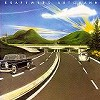
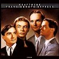
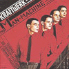
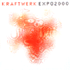

strange music page
overseas * * * kraftwerk
#テクノの神様、いろんな意味で。
とりあえず
KRAFTWERK.COM
へ、行ってください。そしてロボットTシャツを買いましょう。
|
|
#KRAFTWERKの正規にはCD化されてない初期3枚にライヴ音源を加えた2枚組のブートCDです。
初期音源初めて聴いたんだけど.....あまり期待してなかったけど.....
かっちょいいじゃねぇかと。
1枚目と2枚目には
NEU!のKlaus Dingerが参加してます。この頃は全然テクノじゃないです、典型的ジャーマンロック、ハンマービート有り、ノイズ有り。
NEU!程突き抜けて無いし、この頃のTangerine Dream程観念的でもないし、Cluster程逸脱してる訳でもないし。
少しずつミニマルにシンプルになっていくのが並べて聴くとわかります。えーとおまけのライヴトラックはアウトバーンの時のツアーと、ビートクラブに収録されてる音源あたりらしいです。
でもコレクターズアイテムにしとくのは勿体ない位、このCD自体おもしろいです。特に３枚目のTANZMUSIKとかかっちょいい。
ちなみにこんなものどこで買ったかというと近所の八百屋の2階の古本屋。徒歩1分。(2002.5.26)
Ralf & Florian
- ELEKTROSCHES ROULETTE
- TONGEBIRGE
- KRISTALLO
- HEIMATKLANGE
- TANZMUSIK
- ANANAS SYMPHONIE
KRAFTWERK 1
- RUCKZUCK
- STRATOVARIUS
- MEGAHERZ
- VOM HIMMEL HOCH
KRAFTWERK 2
- KLINGKLANG
- ATEM
- STROM
- SPULE 4
- WELLENLANGE
- HARMONIKA
UND VOR PUBLIKUM
- KOMETENMELODIE
- MORGENSPAZIERGANG
- TEIL I
- MORGENSPAZIERGANG
- TEIL II
- INTERZONE
- Ralf Hutter
- Florian Schneider
- Andreas Hohmann
- Klaus Dinger
- Michael Rother
#とてもとてもストイックな音楽。物凄く少ない音数で、アウトバーン(ドイツの高速道路みたいなの)を表現してる。みたいです。
といっても、そんなにスピード感が有る曲では無いです。どっちかというと100km/hくらいで走りつづける単調な道路って感じで。結構ヒットしたみたいですけど。
AUTOBAHN以外の曲はまだまだ実験ロック、この頃のはちょっと地味過ぎかな？初期音源の方がかっちょいいかも。
ちなみにプロデュースはこのアルバムまでConny Plank。

- AUTOBAHN
- KOMETENMELODIE 1
- KOMETENMELODIE 2
- MITTERNACHT
- MORGENSPAZIERGANG
produced by Conny Plank
- Ralph Hutter
- Florian Schneider
- Wolfgang Flur
#こいつは洋楽聴き始めた頃に買った奴です。中学校の頃で確かベリンダ・カーライルと一緒に。ある意味まっとうな中学生？
その頃は良さわかんなかったです「ガガー」とか「ピー」とか言ってるだけな感じがしちゃって、しばらくして手放しちゃいましたし。
今聴くと音数の少なさとか、音の隙間の使い方とか面白いなーとか思いますけど。
- GEIGER COUNTER
- RADIO-ACTIVITY
- RADIOLAND
- AIRWAVES
- INTERMISSION
- NEWS
- THE VOICE OF ENERGY
- ANTENA
- RADIO STARS
- URANIUM
- TRANSISTOR
- OHM SWEET OHM
- Ralph Hutter
- Florian Schneider
- Wolfgang Flur
- Karl Bartos
#やっぱ3曲目、"SHOWROOM DUMMIES"ですね。ロック的な盛り上がりとかポップスみたいなオイシイ所を排除した色気の無い音ですけど、そのストイックさがカッコイイです。

- EUROPE ENDLESS
- THE HALL OF MIRRORS
- SHOWROOM DUMMIES
- TRANS-EUROPE EXPRESS
- METAL ON METAL
- FRANZ SCHUBERT
- ENDLESS ENDLESS
- Ralph Hutter
- Florian Schneider
- Carl Baltos
- Wolfgung Flur
東芝EMI: TOCP-3086 (original release 1977 - CAPITOL RECORDS)
#大名盤ですね。クラフトワークのテクノのイメージを定着させた一枚と思います。"We Are The ROBOT"とか言っちゃってます、すばらしすぎますね。ジャケの赤いシャツ来たテクノカット4人組...音もコンセプトもかっちょ良すぎです。

- THE ROBOTS
- SPACELAB
- METROPOLIS
- THE MODEL
- NEON LIGHTS
- THE MAN MACHINE
- Ralph Hutter (voice,electronics)
- Florian Schneider (voice,electronics)
- Carl Baltos (electronic percussion)
- Wolfgung Flur (electronic percussion)
東芝EMI: TOCP-3087 (original release 1978)
#地元の中古屋さんで、\600でした。骨格だけで形成された音、アホみたいにチープな音でもすごい質感。すばらしいです。
輸入盤買っちゃったんですけど、確か国内盤には「POCKET CALCULATOR」の日本語バージョンが入ってるはず......"ボクハデンタク!"とかいうヤツが。
(2000.6.1)
- COMPUTER WORLD
- POCKET CALCULATOR
- NUMBERS
- COMPUTER WORLD 2
- COMPUTER LOVE
- HOME COMPUTER
- IT'S MORE FUN TO COMPUTE
- Ralf Hutter
- Florian Schneider
- Karl Bartos
- Wolfgang Flur
EMI RECORDS: 0777-7460402-4 (original release 1981)
- BOING BOOM TSCHAK
- TECHNO POP
- MUSIQUE NON STOP
- THE TELEPHONE CALL
- SEX OBJECT
- ELECTRIC CAFE
- Ralf Hutter
- Florian Schneider
- Karl Bartos
- Wolfgang Flur
東芝EMI: TOCP-50580 (original release 1986 - EMI RECORDS)
#実は個人的には一番気に入ってるアルバムです。要するに旧曲のリミックスなんですけどね。異常にカッコ良くなっていまして。なんていうかストイックな雰囲気はそのまんまで音だけ現代版になってて、なんでこんなに良くなるんだろう？といった感じで。
いやほんとに新作の期待大なんですけど、出ないんですかね？

- THE ROBOTS
- COMPUTER LOVE
- POCKET CALCULATOR
- DENTAKU
- AUTOBAHN
- RADIOACTIVITY
- TRANS-EUROPE EXPRESS
- ABZUG
- METAL ON METAL
- HOME COMPUTER
- MUSIC NON STOP
- Ralph Hutter
- Florian Schneider
- Fritz Hilpert
東芝EMI: TOCP-6804 (1991)
#なんだかいつのまに出ていたKRAFTWERKの新譜、下北沢ONSAで買いました。初めてこの店(ONSA)行ったんですけど、品揃えは好みだしカフェも付いててイイ感じでした。DER PLAN(ドイツの昔のエレクトロミュージック)とかも売ってました、今度また買いにいこ。
それはさておき10年振りくらいの新曲じゃないかと思うんですけど、何一つ変わらずKRAFTWERKの音ですね。もう相変わらずとしか言いようの無い...でもやっぱイイんですよね、結局最近のテクノってこの人達を超えてないんじゃ?なんて思ったりも。(1999.12.29)

- EXPO2000 RADIO MIX
- EXPO2000 KLING KLANG MIX 2000
- EXPO2000 KLING KLANG MIX 2002
- EXPO2000 KLING KLANG MIX 2001
- Ralf Hutter
- Florian Schneider
EMI ELECTROLA: 7243-8-87984-2-6 (1999)
#渋谷HMVのワゴンセールにて、\900。元KRAFTWERKのWolfgang Flurのプロジェクトです。mouse on marsのお二人が参加。あまり期待してなかった割にはナカナカでした。KRAFTWERK的な要素ももちろん有るんですが、もっと最近のエレクトロ系の音に近い質感を持っています。
3曲目"Stereomatic"は、
mouse on marsのアルバムにも"stereomission"って名前で収録されてます。やっぱドイツ系の年季入った人達はやっぱ凄いですね。
- Time Pie
- Mosquito
- Stereomatic
- Awomanaman
- Aurora Borealis
- Guiding Ray
- Tra Testa E Mano
- Speech Dancer
- Naked Japanese
- DR.UG.LY.
- UG.LY. On The Run
- Mosquite Groove
- Wolfgang Flur
- Andy Toma
- Jan Werner
- Michael Grund
POP BIZ: PBPBCD-005